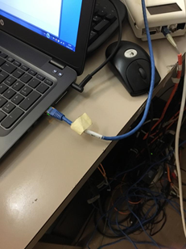
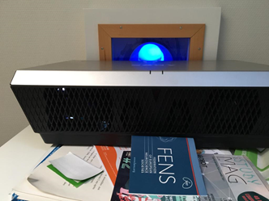

Data collection
Scheduling¶
One week BEFORE THE FIRST SESSION¶
- Send a copy of the MRI Safety and screening form to the participant over email and confirm reception
- Confirm that participant has read and understood the document, and in particular, double-check that they do not have any MRI contraindications
- Remind participant that any jewelry should be removed prior to the scan
- Confirm clothing:
- if allowed to wear street clothes, remind participant to avoid clothing with metal or that would uncomfortable to lie in for the duration of the scan; otherwise
- remark the participant they will be given a gown and they will need to change before every session.
- If participant has indicated nervousness or history of claustrophobia, utilize mock scanner
BEFORE DAY OF SCAN¶
- Make sure you have internet access, and update the fMRI-Control-Task repository. Assuming the repository is cloned from your
/fMRI-Control-Task and you have another remote upstreampulling fromgit@github.com:theaxonlab/fMRI-Control-Task.git:git fetch upstream git checkout main git rebase upstream/main - On the hos68752 laptop, open a terminal and execute
conda deactivate. - Open psychopy 3 by typing
psychopy - Load in the different experiments and check for proper functioning if there were changes.
DAY OF SCAN, prior to participant arrival¶
- Remove the head coil that is currently installed. If it is the 64-channel, you can just temporarily move it into the scanner's bore. Otherwise, store it on the shelve where the other coils are and bring the 64-channel one in the proximity of the bed (e.g., inside the scanner's bore).
- With no head-coil installed, remove the spine coil by lifting the corresponding lock and replace it with the back paddings.
- Take the 64-channel head and neck coil and fixate it onto the head end of the bed. This operation may require the removal of paddings and fittings of other coils, if they were present.
Setting up the eye-tracker
Thanks
All the documentation about the eye-tracker is derived from Benedetta Franceschiello's user guide.
- The eye-tracker (ET) computer is kept on its designated rolling table, which is stored under the projector in room BH07/075. Behind the rolling table, there is a transparent panel where the ET camera will be set up inside the scanner bore.
- Verify that the monitor and the cable, as well as the ET over the PC tower are fixed to the rolling table with scotch tape.
- Bring the table with the ET computer to the access closet (outside) of the scanner room. Be very attentive during the displacement and lift the front wheels when passing steps or cables. The transparent panel can also be brought to the scanning room simultaneously, if done with care.
- From room BH07/071 (first cabinet on the left), take the box with the «fMRI usage» label, containing the ET camera, lenses, and the special infrared mirror.
- Take out of the lenses box the MR-Compatible lense. It is easy to recognize it, from its two golden screws.


- Un-screw any present lenses, being very careful: one hand must be hold under the lens, to avoid crashes, as it is a bit tricky to screw and un-screw it. In case a lens it’s already present, un-screw it and put it back to its plastic bag, inside the lenses box.

- Be Careful: the lens needs to be substituted before entering inside the Scanner Room
Now you can enter the scanner room
- Place the transparent standing panel inside the scanner bore, following the indications stuck on the panel (i.e., it has indication of which side goes up and tape markers for the position of the ET).
- Take the ET inside the scanner room, and put it on top of the plastic base. The two back "feet" of Base of the ET have to be within two corners made of transparent scotch and already attached to the plexiglass. BE CAREFUL, HOLD IT STRONGLY, CAUSE THE MAGNETIC FIELD GENERATES RESISTANCES. Connect the cables (two plugs for the black, one plug for the orange).
- Open the door of the cable section between the recording room and the scanner room.
- First pass the optic fiber (orange wire) and the power cable (the one with a fabric sheet) through the access point (TODO: ATTACH PICTURE). This operation requires two people, one handling the cables from outside the scanner, and the other gently pulling them from inside. Both people will lift the cable to avoid its abrasion with the edges of the metallic cylinder, which is the passage between exterior and interior of the scanner room. Once the sliding of the cable is finished, leave the extremities inside the scanner room in the left-top corner, far from the scanner. These parts are magnetic.
- Place the plastic base into the bore of the MR, top side. DON’T PUSH IT inside, it needs to be adjusted once the subject is placed inside the scanner, to ensure the repeatible positioning of the ET.
- Detach the mirror frame from the head coil, if it is placed there. Remove unnecessary items from the scanning bed, and prepare the mirror to attach the infrared mirror of the ET at a later step.
- Prepare two long stripes of scotch tape and leave them in a convenient place to then attach the ET mirror with them on to the standard mirror. E.g., attach the corner of each strip to the back part of the mirror frame.
- Take out the box containing the infrared mirror from the «fMRI usage» box. DO NOT EXTRACT THE MIRROR OUT FROM ITS BOX YET. The mirror's box is labeled as RELIQUIA DI SAN GENNARO to emphasize that THIS IS THE MOST DELICATE PART, BECAUSE THE MIRROR CANNOT BE REPLACED NOR CLEANED. This mirror is EXTREMELY EXPENSIVE.

- Get two gloves (e.g., from the box hanging at the entrance of the scanner room), then approach the scanner bed. Put the gloves on, and DON’T TOUCH ANYTHING. You MUST have the standard mirror dismounted and in front of you at this point. WITH THE GLOVES proceed to extract the infra-red mirror from its box, being extremely careful. YOU CAN ONLY TOUCH THE MIRROR WITH GLOVES, because it cannot be cleaned up. Watch out for FINGERPRINTS and once taken out of its box, IMMEDIATELY PROCEED TO ATTACH IT to the standard coil mirror. The mirror MUST NOT be placed anywhere else if not in its box.
- WITH YOUR GLOVES ON, attach the ET mirror to the standard coil mirror (the larger mirror that points toward projector's screen at the back of the scanning room). Put it more or less in the center, although this position may need to be adjusted (being careful and with the same precautions explained before) and stick it with the paper scotch. Do not touch the surface of the ET mirror.
- Place the mirror frame back on the head coil. As always, DO NOT TOUCH THE MIRROR.
Back OUTSIDE THE SCANNER ROOM
- Connect the Power cable to the metallic extremity belonging to the PC-tower
- Plug in the Power strip containing the ET Power Cable, the PC-tower power, etc


- Switch on the PC-tower, as well as the laptop:

- This is the sync box of the scanner, allowing a synchronization of the triggers between the scanner sequence and the ET recordings.

- Connect to the laptop the ET- ethernet blue cable and the USB sync box. If it’s plugged into the sync box, it needs to be re-plugged in after usage.


- Connect the hos68752 laptop to the screen switch box (see picture below) with the corresponding HDMI cable. This should project your screen on the second screen.

-
Double check that the IP address corresponding to the ethernet interface of the hos68752 laptop is correct. You can either run
ifconfig -aor use the GUI. Make sure the IP/mask is 100.1.1.2/24, and the protocol is IP version 4. Executeping 100.1.1.1to see if the eye-tracker is responding with echoes. -
Now it’s time to check that the sync box correctly [WRITE ON HOW TO SEND TEST TRIGGER MANUALLY]
-
Once the previous has been checked, it’s time to put the sync box in “Synchronization” mode. Start the session: the box it’s ready to receive the trigger from the sequence and they will be available for Experiment builder / Python / whatever is used to register the trigger and the ET signal.

- Switch the projector on by hitting the power button on on its right side. The projector is found in room BH07/075. If the projection is not well located, the projector needs to be adjusted. E.g., change the height of the paper pile that supports it (see images, FENS papers).
 The hole is the part through which we should check the quality of the projection
The hole is the part through which we should check the quality of the projection


- Go back to the hos68752 laptop, open a terminal and execute
conda deactivate. - Open psychopy 3 by typing
psychopy -
Open the
-
Check stimulus display and response device:
- Check the movie to be displayed is ready
- Check the execution of the Breath holding task
- Check the execution of the finger tapping task
Set-up of documents and equipment
- Prepare consent documents (first session only)
- Prepare an MRI safety screener
- Prepare scrubs and MR-compatible glasses if applicable
- Setup scanner room and peripherals:
- prepare the 64-channel headcoil,
- prepare paddings: under-knee padding, neck padding, inflatable head-paddings
- prepare a blanket
- prepare a new pair of earplugs
- prepare the respiration belt, as well as the placeholder for the ECG and other physio sensors
- connect the cable from the RJ-45 output of the syncbox to the first filter (VNC connector; has a label "External signal") in the cupboard covering the access panel to the Faraday cage. The cable might be stored in the lower left cupboard of office 071. Make sure you will have access to the cable with sufficient time ahead.
- On the scanner console, check the external signal input registers triggers from the syncbox
- prepare a thermometer
- prepare a blood preasure meter
- Prepare the gas-analyzer:
- Prepare the canule tube, which is introduced through the tube in the access panel
- Prepare a new canule
DAY OF SCAN, right when the participant arrives¶
- Have participant fill out consent documents and MRI safety screener, and verbally confirm responses, paying attention to frequently forgotten devices and implants, like orthodontia
- Have participant empty their pockets or change into scrubs, and remove all jewelry/hair accessories and check for any missed metallic objects with the scan center’s preferred method
- Instruct participant on staying still and encourage them to request breaks if necessary
- Describe the participant how the session will develop, with special attention to tasks. Answer all the questions that may arise.
- Show the alarm button to the participant, instruct them to hold it on their hand throughout the session, with the exception of the finger tapping task for which they should leave it on their belly
- Place participant on the scanner's bed:
- Accommodate the head inside the head coil
- Check again that it is the 64-channel head coil
- Check the scanner's screen that the three coils [SAY MORE SPECIFIC] are connected and active
- Solicit feedback on participant’s comfort while positioning them on the scanner bed and suggest ergonomic positioning of arms to avoid discomfort
- Make sure the speaker is audible (and not annoying) and confirm the participant's feedback
DAY OF SCAN, participant setup¶
- Take the half-circle one-direction screen from the table behind the scanner and put it on the back of the scanner, behind the ET system (don't push the plexiglas yet)
- Memorize where the other tools for the recordings are, to put those back in place at the end (coil, emergency button, ears cover.)
- Bring the participant inside the room, and give him the ear-plugs to protect the hearing during acquisition.
- Give to the participant the emergency button. Make the participant try it, so they can see it works. To switch off the alarm, there’s a button on the scanner (circular, both on the left and on the right of the hole)
- Adjust the participant inside. With the pillow, its head position needs to be adjusted and elevated until the head can’t move anymore and the nose and the front of the participants are both adherent to the upper coil. This procedure guarantees that the ET "sees" the eyes. If not, the experiment gets stuck.
- This part needs to be repeated taking out and putting back the upper part of the head-coil, adjusting the pillow at every step, until the head is fixed and the nose and front of the participant touch the coil. In case of need, ask the participant to "say yes" with the head (chin on neck) and keep this position, place the pillows, place the coil and check that the participants' front touches the coil. Now the nose can also be a bit far from the coil. Tell the participant to relax the neck, so the nose should go a bit up and touch the coil.
- Take the Ears -protection pillow, stick it on top of the ears of the participant, one by one. Once they are settled, you can pump it, until the participant is comfortable, the head is fixed and the ears are protected.
- Once the previous part is insured, the participant is ready. If he’s cold, put a blanket on top of him. Give to the participant the emergency button.
- Gently move the participant with the manual regulation. Stop when the head is under the head-localizer. Ask the participant to close it’s eyes, localize the head with the infrareds.
- Switch off the infrareds, now the participant can open the eyes. You can move the participant (always gently as before) inside the scanner, until the mm counter marks “Isometric”.
- Go behind the scanner, push the plastic base until it touches the bed. Hold on the Eye-Tracker.
- Regulate the Eye-tracker position until you see from the projector screen the Eye. In case of need, you can adjust the strength of the infrared light (emitter). This is the black box on the other side with respect to the lens. Under the emitter there are two little screws. Unscrew, move the emitter front/back, check the contrast of the face image, re-screw. Once the eye is well seen, the image is zoomed (externally by the operator in front of the PC-tower) to the pupil. The right lens needs to be manipulated rotating the roller, like what you would do with your reflex to obtain the focus. If the position of the Eye-tracker is not satisfying, you can move the base.

- If the pupil is correctly seen, as well as the eye, you can go out. The calibration needs to start.
- Tell the participant that he will need to follow some point with its eyes, without moving his head.
- Tell the participant to move the eyes ONLY after the point moves (do not anticipate).
- The ET software needs to show a cross performed during the calibration. If not, the ET inside the scanner needs to be adjusted.
- If not, the head of the participant needs to be adjusted again.
- If not, the mirror needs to be moved up or down (being careful as mentioned before). Just a few mm can ruin the calibration and the eye-position.
- If the calibration is ok, you can move forward and record. text
SCAN TIME¶
Scan console checklist
Parameters to double check
- MUX: 3
- TR: 1490
- TE: 3
Console instructions
-
1. Run localizer
- SAVE Rx
- SCAN
-
2. Prescribe rest
- Select
task-rest_boldand click once on the localizer image that appears. - Move the block of lines so that the whole brain is covered, with plenty of space in the front and back, top and bottom.
- Do not run yet!
- Select
-
3. Run shimming
- Select GE HOS FOV28
- SAVE Rx
- SCAN
- Adjust circle around the brain so that the red circle goes as tightly around the brain as possible
- CALCULATE
- Done
- Select the same scan again
- SCAN
- Add to Same Series
- CALCULATE
- If the difference between expected and actual is < 1 continue; else repeat.
-
4. Fieldmap
- Select fmap-fieldmap
- Click the brain once, adjust the prescription so that it covers the whole brain.
- SCAN
-
5. Rest Scan
- Select
task-rest_bold - Already prescribed from shim setup.
-
Put the fixation cross on the bore monitor, check in with the participant:
Hey [NAME], we are about to start our first scan run. For this scan, all you have to do is stay still, and look at the screen. Let us know when you’re ready to begin by pressing any button.
-
PREP SCAN
- Physio setup
- Click scan drop down menu
- Research
- Phys_flag_record
- Change cv to 1
- SCAN
- Select
-
6. Task scans
- Select
task-[TASK NAME]_bold - Copy prescription from rest (GRx Toolbar -> Select scan to copy from -> Copy)
- SAVE Rx
-
Put the task window on the bore monitor
-
check in with the participant.
Hey [NAME], we are about to start our next scan run. For this scan, [TASK INSTRUCTIONS]. Let us know when you’re ready to begin by pressing any button.
-
Advance through practice trials, keeping an eye on the participant’s performance on the task if applicable.
-
-
PREP SCAN
- Physio setup
- Click scan drop down menu
- Research
- Phys_flag_record
- Change cv to 1
- SCAN
- Select
-
7. Anatomical scans (T1w and T2w)
- Prescribe by clicking the localizer image once, and adjust the blue box with crosshairs so that the whole brain is covered, with plenty of space in the front and back, top and bottom.
- SAVE Rx
-
Put the fixation cross on the bore monitor, check in with the participant:
Hey, [NAME], we are about to start our next scan run. For this scan, all you have to do is stay still. Let us know when you’re ready to begin by pressing any button.
-
SCAN
DURING SCAN¶
- Check in with participant frequently
- Watch for motion if you can see the participant, or use motion monitoring equipment
END OF RECORDING¶
- Everything that is removed for the experiment needs to be put back in place and the end of the experiment, i.e. position of the bed, coil, emergency button, ears cover.
- Before doing anything else, put the plastic base far from the bed, again. Do not remove the projector screen yet, otherwise the participant would be flashed by the lights.
- Take out the participant gently as before.
- Remove the upper part of the coil
- Remove the ear-pillow.
- Let him go.
- Switch off the projector.
AFTER SCAN, inside scanner room¶
- Take the upper part of the coil. Take the plastic container of the infrared mirror. Take the gloves. Put them on.
- Remove the scotch. Put the mirror back in its custody. Then back in its plastic bag.
- Place it back in the fMRI external box, with extreme care.
- Clean the coil mirror from the scotch. Clean the coil.
- Remove it and put it back in place.
- Put the pillows back in place.
- Put the projector screen back in place.
- Unplug the Eye tracker from the Optic Fiber and the Power. Put those extremities aside far from the scanner. Take the Eye-Tracker back outside. Put it in a stable place.
- Remove the plastic base, put that outside next to the box.
- With someone from the other side, pass being extremely careful the cables (fiber and power of the ET) back thought the hole. Roll them around their support being extremely careful.
- Put the bed back in place = push the "home" button on the scanner
- Take a glove, on the right there is some cleaning napkins. Use them to clean the bed.
- exit and Close the External door.
AFTER SCAN, outside scanner room¶
- Solicit more feedback on participant’s comfort for future sessions
- Switch off laptop and ET PC Tower. Plug back the sync box and the VGA projector where they were.
- Fix the rolled cable with the scotch on the PC Tower base.
- Take the ET, Remove (always with and hand under the lens) the MRI compatible LENS. Put it back to its contained inside the box.
- Put back the regular Lens.
- Bring back the box and the base at CIBM EEG lab. Put the keys back under old Nora’s desk.
- Fix the ET with the scotch at the chariot.
- Bring back the chariot and the TMS laptop at the TMS lab